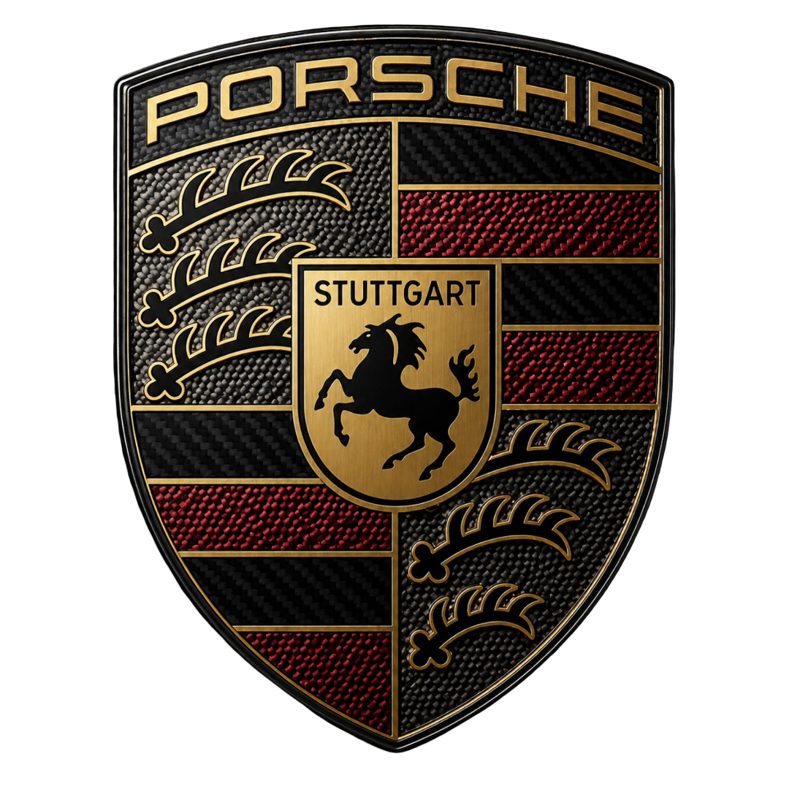
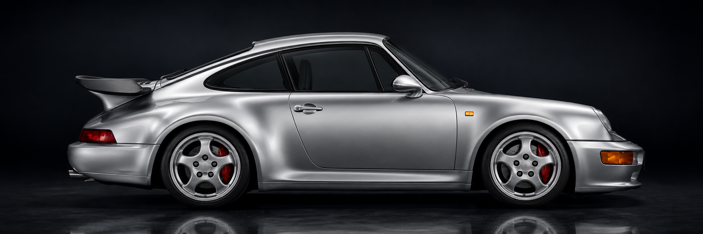
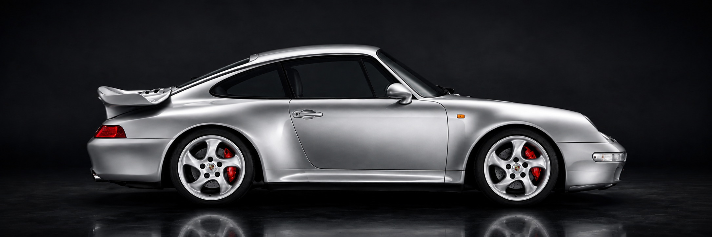
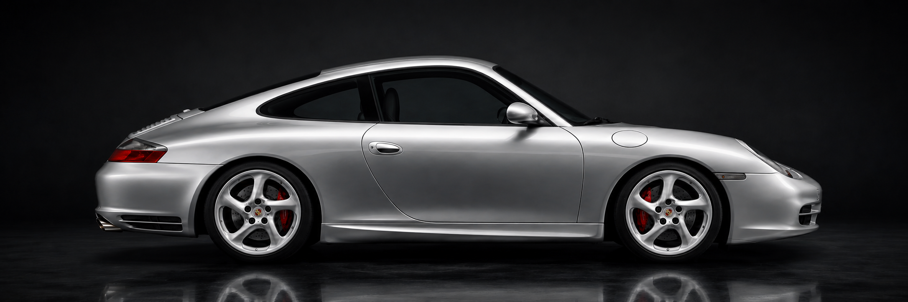
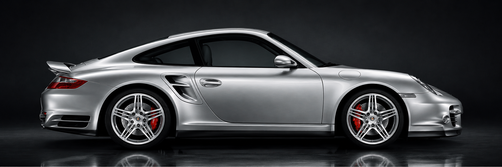
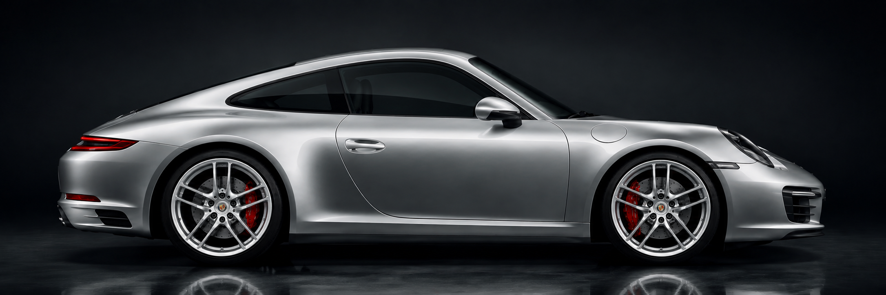
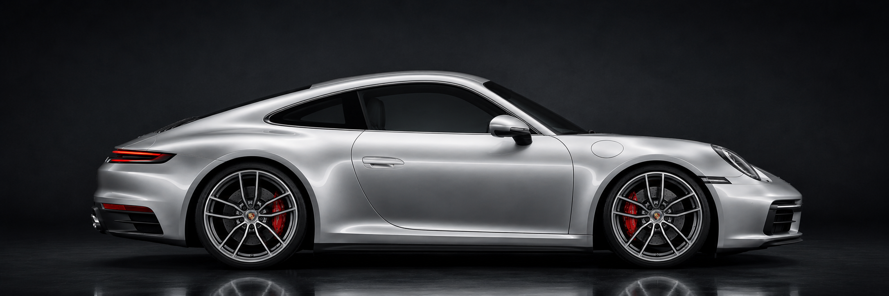

Wiedererkennung
Die flache Front, die runden Scheinwerfer, die abfallende Dachlinie und das kräftige Heck gehören zu den wichtigsten Designmerkmalen des 911.

Geschichte
Der Porsche 911 wurde 1963 vorgestellt und entwickelte sich über mehrere Generationen weiter. Besonders stark ist die Mischung aus Wiedererkennung und Fortschritt: Die Form bleibt typisch 911, während Motoren, Fahrwerk, Sicherheit, Bedienung und Aerodynamik immer moderner wurden.
Diese Seite erklärt die Entwicklung verständlich und trennt sie klar vom Modelle-Bereich. Hier geht es nicht um aktuelle Varianten, sondern um die historische Linie vom klassischen 911 bis zur modernen 992-Generation.
Historische Einordnung
Porsche hat den 911 über Jahrzehnte nicht komplett neu erfunden, sondern schrittweise weiterentwickelt. Genau dadurch bleibt der Wagen sofort erkennbar, obwohl Technik, Leistung, Sicherheit und Bedienung stark moderner wurden.
Die flache Front, die runden Scheinwerfer, die abfallende Dachlinie und das kräftige Heck gehören zu den wichtigsten Designmerkmalen des 911.
Wichtige Schritte waren unter anderem Turbo-Technik, Allradantrieb, Wasserkühlung, digitale Bedienung und moderne Assistenzsysteme.
Diese Seite behandelt die Geschichte. Aktuelle Varianten wie Carrera, Targa, Turbo oder GT3 werden sauber im Bereich „Modelle“ erklärt.
Bildauswahl
Der Slider zeigt die Generationen, für die im Projekt Bilder vorhanden sind. Die vollständige historische Übersicht folgt direkt darunter.
Galerie
Die Galerie zeigt die wichtigsten Entwicklungsschritte vom 930 bis zum 992. Sie ergänzt die Timeline und macht den Wandel der Form besser sichtbar.






Vollständiger Überblick
Für die fachliche Vollständigkeit zeigt diese Übersicht die Hauptgenerationen des 911 von 1963 bis heute. So ist die Geschichte nicht nur optisch, sondern auch inhaltlich vollständig eingeordnet.
Wendepunkte
Diese Punkte erklären, warum der 911 trotz ähnlicher Grundform technisch immer wieder große Sprünge gemacht hat.
Der Turbo brachte mehr Leistung und machte den 911 optisch deutlich breiter und aggressiver.
Moderne Allradtechnik verbesserte Traktion und machte hohe Leistung besser kontrollierbar.
Mit dem 996 änderte sich die Motortechnik grundlegend und wurde zukunftsfähiger.
Aktuelle Generationen verbinden klassische 911-Form mit digitaler Bedienung und Assistenzsystemen.
Schulprojekt
Die Website ist ein inoffizielles Schulprojekt. Die Texte sind eigenständig formuliert und dienen der verständlichen Einordnung. Marken, Modellnamen und Bilder werden nur zur projektbezogenen Darstellung verwendet.
Fazit
Die Besonderheit des 911 liegt darin, dass er sich stark weiterentwickelt, ohne seine Identität zu verlieren. Genau das macht die Geschichte dieser Modellreihe so interessant für ein Webprojekt.
Viele Gestaltungsmerkmale bleiben über Generationen erkennbar und schaffen eine starke Identität.
Motoren, Fahrwerk, Bremsen, Aerodynamik und Innenraum wurden immer wieder modernisiert.
Durch die klare Trennung von Geschichte und Modellen ist die Website jetzt fachlich sauberer aufgebaut.